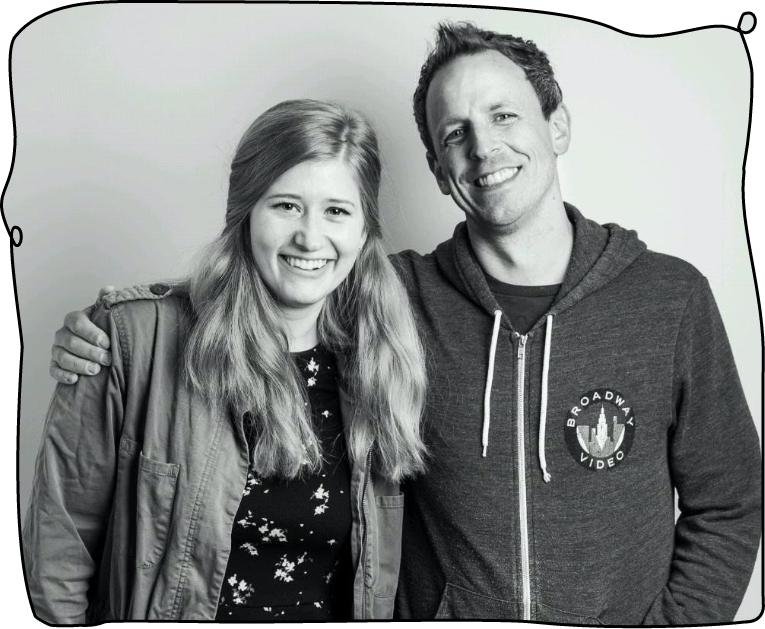
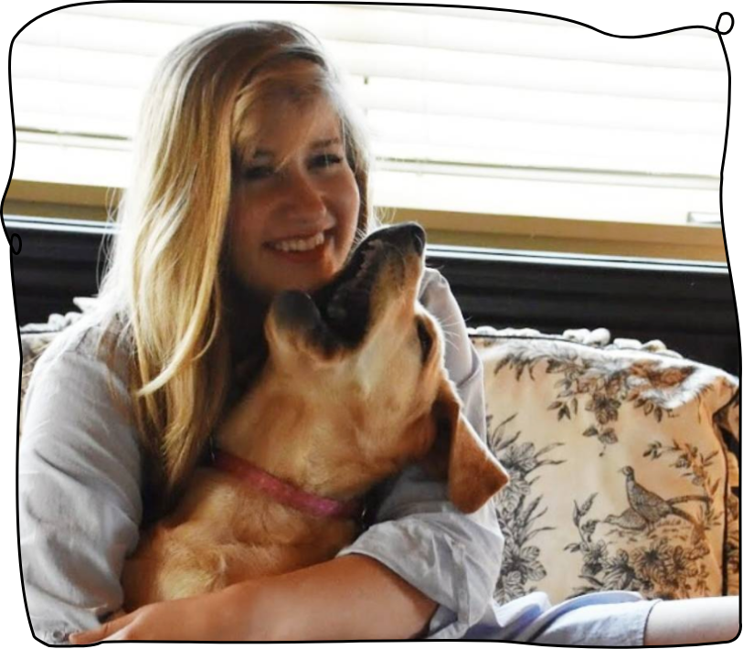

First off, thanks for coming to learn about me! I'm glad to have you here.
My name is Kara Tippins and I am an UX designer and professional storyteller. I design digital products with an eye for compelling, intuitive design that makes it fun and easy for users to find what they're looking for and do what they need to.
Check out my work!I came to UX because of my love of storytelling and changing people's lives for the better. In my not-so-distant past life, I was a journalist working at Late Night with Seth Meyers and and in the halls of the BBC newsroom. Today, I still bring that same sense of tenacity, creativity and passion to dig deeper to the "why" of an issue to the design projects I encounter.
Outside of work, I can attest that I am a living, breathing (pretty cool, if I do say so myself) human. My weekend past times include digging up dirt and planting things, getting hopelessly inspired by "The Great British Bake Off" and snuggling up to Nellie, my 100-lb yellow Labrador Retriever (also known as my “Sweet Potato” or my "Golden Bear").
